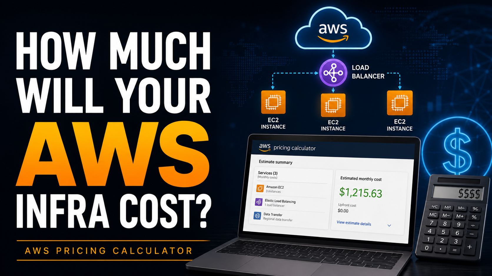
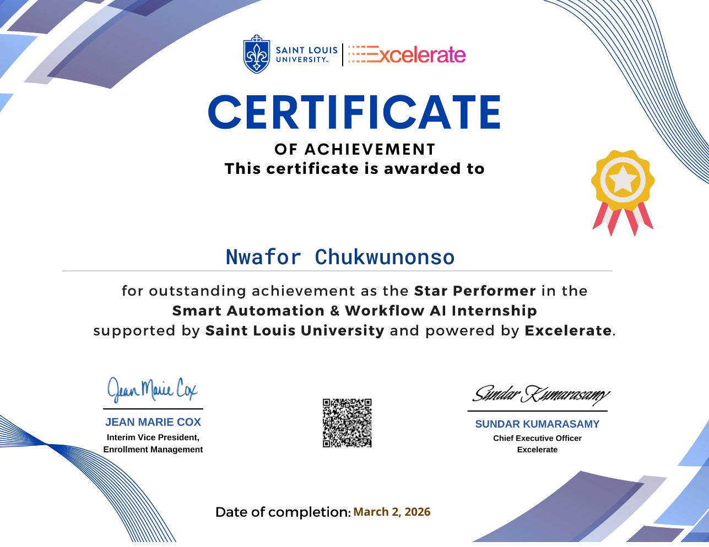
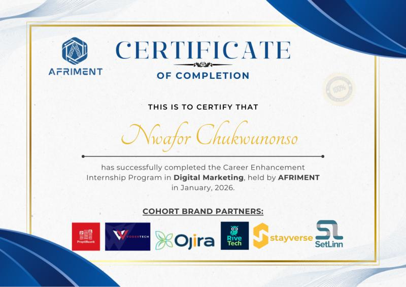
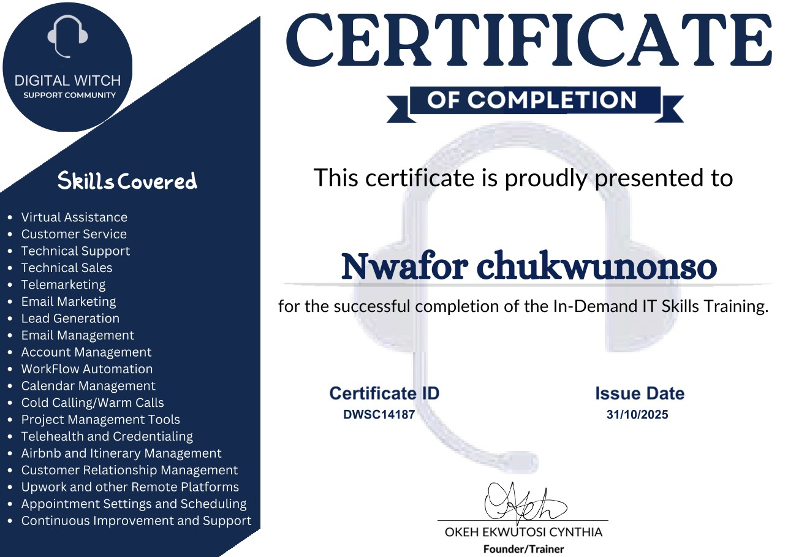

01 / 04
01 / 04Cloud Infrastructure
AWS High-Availability Web Application
A highly available AWS web application built using a load balancer and multiple cloud services to support reliable web delivery.
Technologies
View Project CLOUD ENGINEERING · DEVOPS · DIGITAL SOLUTIONS
Cloud Engineer | DevOps | Digital Solutions
I build, deploy and document cloud infrastructure, CI/CD pipelines and modern digital solutions using AWS and DevOps tools.
PROFESSIONAL SUMMARY
I am a Cloud and DevOps practitioner focused on building, deploying, and documenting secure, reliable, and scalable cloud solutions using AWS and modern DevOps tools.
Through hands-on projects, I have worked with AWS infrastructure, high-availability web applications, Docker containerization, CI/CD pipelines, Amazon ECR, EC2, Linux, Nginx, cloud networking, DNS, HTTPS, and infrastructure cost estimation. I enjoy troubleshooting technical challenges, automating deployment workflows, and understanding how cloud services work together to deliver reliable applications.
My approach combines practical problem-solving, infrastructure security, availability, and cost awareness. I am committed to continuously developing my technical skills and building well-documented projects that demonstrate my ability to solve real-world cloud and deployment challenges.
SELECTED CLOUD & DEVOPS WORK
A selection of hands-on cloud infrastructure and deployment projects.
01 / 04A highly available AWS web application built using a load balancer and multiple cloud services to support reliable web delivery.
 02 / 04
02 / 04A containerized movie application deployment using GitHub Actions, Docker, Amazon ECR, and EC2. This project demonstrates a CI/CD workflow from building container images to running containers on a server.
 03 / 04
03 / 04A static website deployed on AWS using EC2, Nginx, custom VPC networking, security groups, and a custom domain.

04 / 04Learn how I used AWS Pricing Calculator to estimate potential cloud infrastructure costs before deployment.
Select a project to view its details and video walkthrough.
TOOLS & TECHNOLOGIES
Hands-on experience configuring AWS infrastructure for website hosting and a high-availability web application, including networking, load balancing, DNS and HTTPS.
Worked with Docker images and containers, GitHub Actions workflows, and Amazon ECR as part of a containerized application deployment project.
Configured an Ubuntu server and Nginx to host a website, with cloud networking, domain configuration and secure web access.
Used AWS Pricing Calculator to explore infrastructure configurations and estimate potential AWS service costs before deployment.
ABOUT ME
I'm Nwafor Chukwunonso, a Cloud and DevOps practitioner passionate about building practical solutions with cloud technology.
My journey involves hands-on projects with AWS infrastructure, high-availability web applications, Docker containers, CI/CD pipelines, Linux, and cloud networking. Through these projects, I've learned to troubleshoot deployment challenges, understand how cloud services work together, and document technical solutions clearly.
I'm also learning Terraform to develop my Infrastructure as Code skills and improve how I provision and manage cloud resources.
I believe in learning by building, solving problems, and continuously improving. My goal is to develop reliable, secure, and efficient cloud solutions while sharing the knowledge I gain along the way.
NWAFOR DIGITAL
Alongside my cloud and DevOps portfolio, Nwafor Digital offers practical website and online presence services for businesses.
Responsive websites that present your business clearly and professionally.
Improve your search visibility and help customers find your services.
Set up your business profile so customers can find you on Search and Maps.
Focused pages for your services, products, campaigns and offers.
Build a practical foundation for your business presence online.
Keep your website updated, functional and ready for customers.
PROFESSIONAL DEVELOPMENT

Excelerate
Certificate of Achievement for outstanding achievement as the Star Performer in the Smart Automation & Workflow AI Internship.
Date of completion:
View Certificate
Afriment Digital
Certificate of completion for the Career Enhancement Internship Program in Digital Marketing.
Date:
View Certificate
Digital Witch Support Community / Digital Witch Academy
Certificate of completion for the successful completion of the In-Demand IT Skills Training.
Issue date:
View CertificateHANDS-ON LEARNING
I am developing my cloud computing skills through hands-on AWS projects involving infrastructure, hosting, networking, availability, security, and cost estimation.
EC2 and VPC, networking and security groups, load balancing and Auto Scaling, plus DNS and HTTPS using Route 53 and ACM.
AWS High-Availability Web ApplicationWebsite hosting with EC2 and Nginx, VPC networking, security groups, and custom-domain DNS with Route 53.
AWS Static WebsiteExploring potential AWS costs with AWS Pricing Calculator. Terraform is a technology I am currently learning for Infrastructure as Code.
AWS Infrastructure Cost EstimationLET’S BUILD SOMETHING
Reach out to discuss cloud engineering, DevOps or digital services.
Chat With Me on WhatsApp Usually reply within one business day